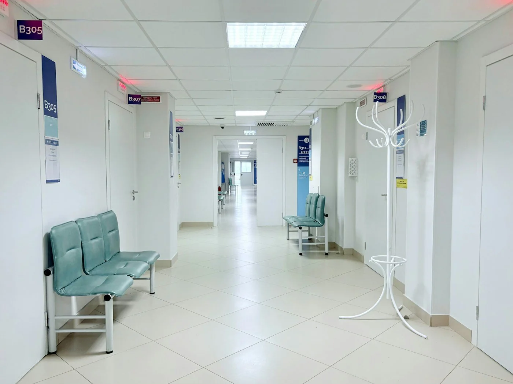

Лицензированные врачи
Специалисты с подтверждённой квалификацией
Современная диагностика, опытные врачи и внимательное отношение к каждому пациенту в одном медицинском центре.
Специалисты с подтверждённой квалификацией
Современное оборудование экспертного класса
Приём точно в выбранное вами время
Всё необходимое для поддержания здоровья в одном месте
Соединяем доказательную медицину, технологии и человеческое отношение
опытных врачей
заботимся о пациентах
пациентов рекомендуют нас
средняя оценка сервиса

Мы создали спокойное и комфортное пространство, где каждый пациент получает достаточно внимания и понятный план заботы о здоровье.
Посмотрите направления и выберите подходящего врача.
Укажите контакты и удобное время для визита.
Администратор подтвердит запись и напомнит о визите.
Не нашли ответ? Позвоните нам — администратор всё подскажет.
Выберите удобный способ: заполните форму на сайте или позвоните по телефону +7 (495) 123-45-67.
Возьмите паспорт, а для ребёнка — свидетельство о рождении. При наличии захватите результаты прошлых обследований.
Большинство консультаций и базовых исследований доступны в день обращения при наличии свободного времени.
Общие рекомендации зависят от исследования. Администратор подскажет правила подготовки при записи.
Оставьте заявку, и администратор поможет выбрать специалиста и удобное время.